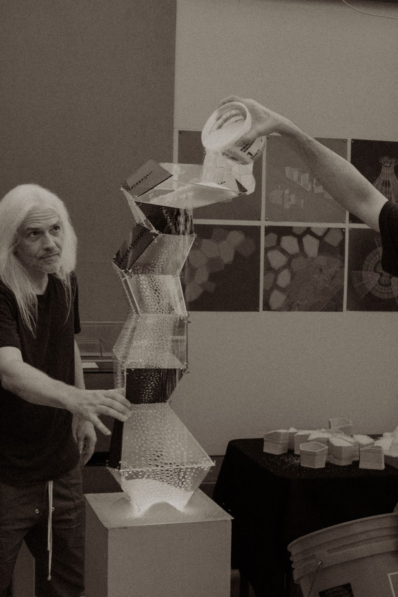
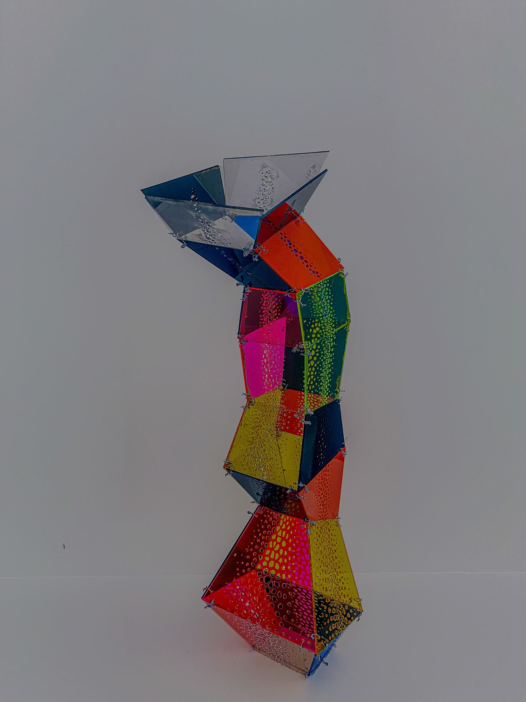
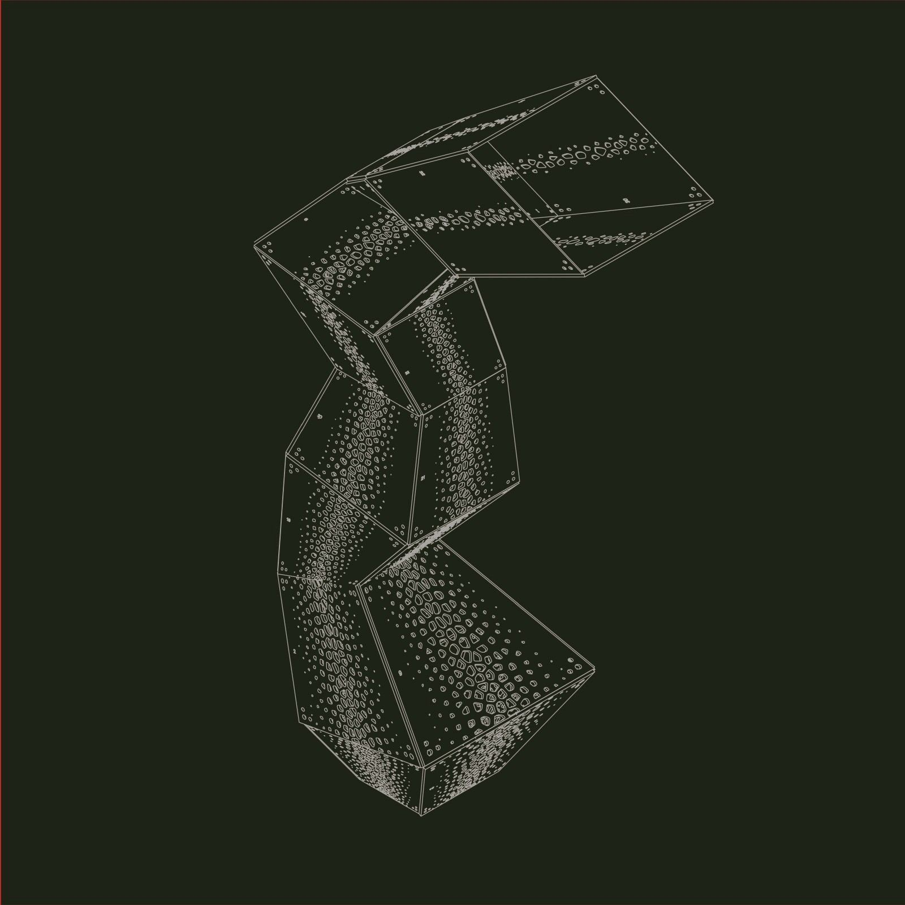
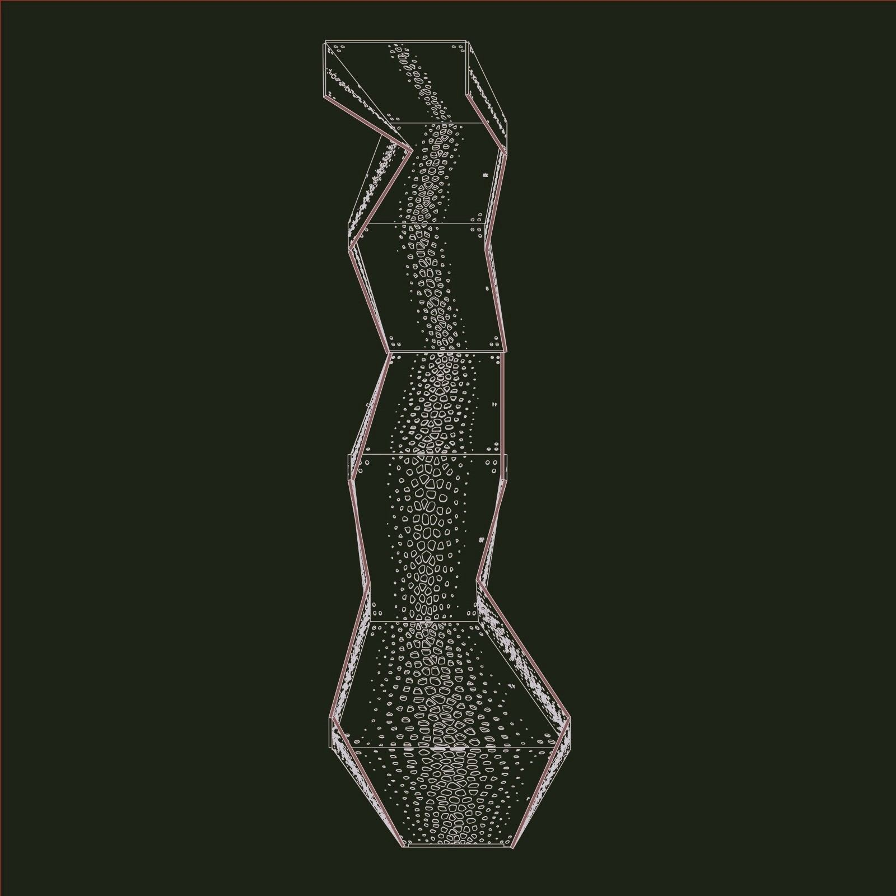
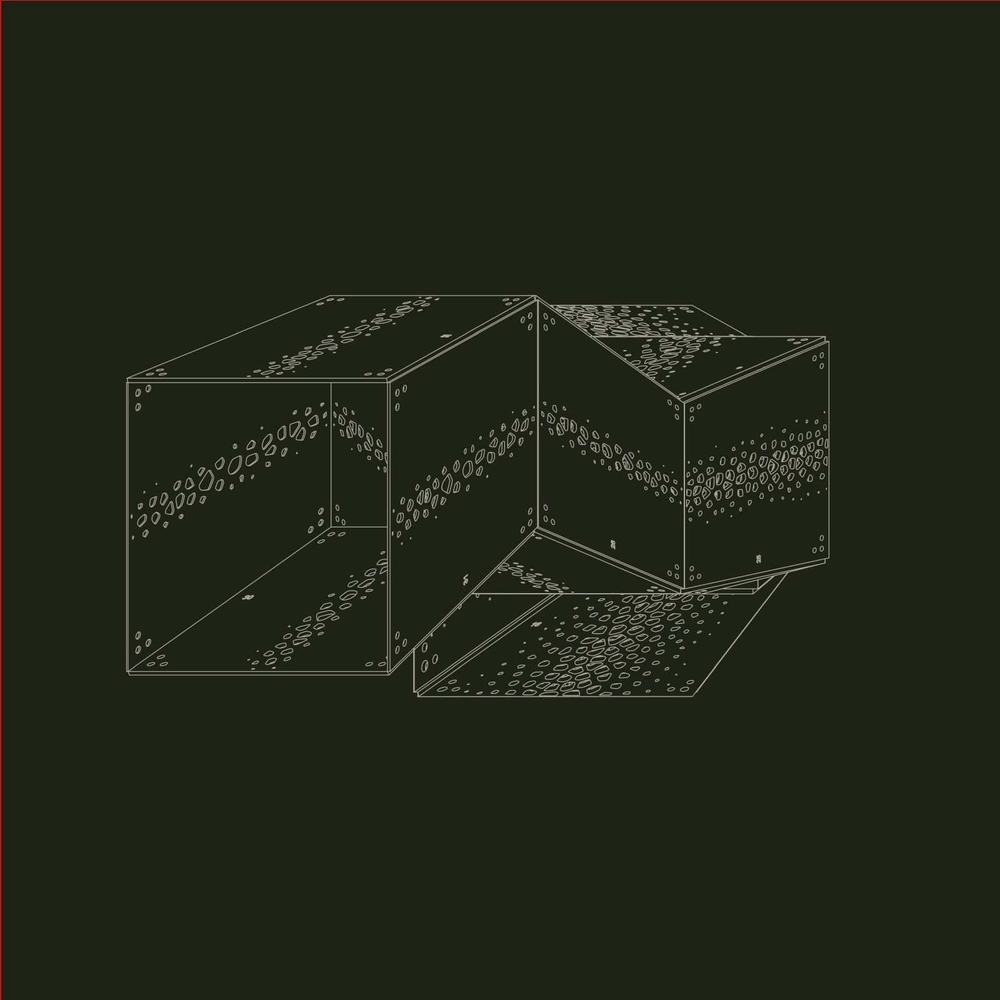

Projects / 06
Performative Vessels
A behavioral vessel that transforms as it is filled with salt
Architecture is usually imagined as permanent and stable; this vessel begins in instability. Laid on its side, it becomes upright only as it is filled with salt.
Design
Made of translucent and transparent acrylic, the vessel does not conceal: salt penetrates its perforations and reveals the inside, and light amplifies its behaviour. It echoes the Persian proverb: “From the vessel flows only what it contains.”
Details
Salt is expressive, not silent. The vessel demonstrates its content, tipping upright as it fills: a first study of behaviour and transformation that the studio carried into the shelter and Saleria.
Beginning in instability
Architecture is usually imagined as permanent and stable; this vessel begins in instability. Laid on its side, it becomes upright only as it is filled with salt.

Behaviour and expression
- Salt penetrates perforations, revealing the inside. It echoes the Persian proverb: “From the vessel flows only what it contains.”
- The vessel does not conceal; it demonstrates its content. Salt is expressive, not silent.
- Material: acrylic, translucent, transparent and expressive.
- Light: the vessel interacts with light, amplifying its behaviour.

Isometric, section and top view



Process
Salt penetrates the perforations and reveals the inside. It echoes a Persian proverb: “From the vessel flows only what it contains.” The vessel does not conceal; it demonstrates its content. It is made of acrylic, translucent and transparent, and it works with light, which amplifies its behaviour. The vessel becomes a small theatre of salt: what happens inside is the architecture.